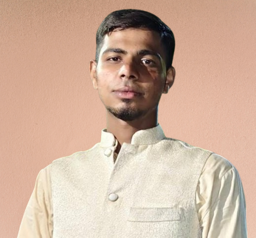

I am a motivated and enthusiastic student with a strong interest in web development. I am currently learning modern web technologies and building projects to improve my practical skills. I enjoy solving problems, exploring new tools, and growing as a developer through hands-on experience.
Download CVfrom Department of management science Dr. Babasaheb Ambedkar University Chhatrapati Sambhajinagar (Aurangabad). with a strong interest in web design and front-end development. I enjoy creating clean, responsive, and user-friendly websites using HTML, CSS, and JavaScript. I am continuously learning new web technologies and building projects to improve my skills and start my career as a Web Designer.
Along with my technical interests, I am passionate about sports, which helps me stay disciplined, active, and focused. My goal is to grow as a skilled web developer and build a successful career in the IT industry through continuous learning and dedication.
Read MoreI am a passionate web development student with a strong foundation in HTML, CSS, and JavaScript, focused on building clean, responsive, and user-friendly websites. I have experience working with Bootstrap for modern UI design, PHP for backend development, and MySQL for database management. I enjoy learning new technologies, creating real-world projects, and continuously improving my skills in full-stack web development to build powerful and scalable applications.
Read MoreI have practical knowledge of MS Office tools including Microsoft Word, Excel, PowerPoint, and Outlook, which I use regularly for academic and project work. I am comfortable creating well-formatted documents in Word, preparing spreadsheets and basic formulas in Excel, and designing clear and attractive presentations in PowerPoint. These skills help me manage information efficiently, present ideas effectively, and support my daily academic and professional tasks.
Read MoreI am building a strong foundation in programming languages that help me understand logic, problem-solving, and software development concepts. I have hands-on experience with languages like C, C++, Java, Python, and JavaScript, which has helped me improve my analytical thinking and coding skills. I also work with SQL for basic database operations.I am steadily improving my programming abilities and preparing myself for real-world development challenges.
Read MoreA focused and reliable individual with a positive attitude toward learning and teamwork.
A motivated and cooperative person who consistently contributes ideas and maintains a strong work ethic.
A supportive and inspiring individual who encourages growth and continuous improvement.
A dedicated and enthusiastic individual who shows commitment, adaptability, and a strong willingness to learn.

A reliable and hardworking person who always strives for improvement and growth.
The Blood Donation and Camp Management System is a web-based application developed to manage blood donors, blood donation camps, blood requests, and blood stock information in an efficient and organized manner. The system provides a centralized platform where administrators, donors, and hospitals can interact easily. It helps reduce manual paperwork, improves data accuracy, and ensures quick access to blood during emergency situations. By digitizing the entire process, the system supports timely communication and better coordination among all stakeholders involved in blood donation activities. In this project, modern web technologies are used to build a reliable and user-friendly system. The frontend is developed using HTML, CSS, and JavaScript, providing a clean and responsive user interface. The backend is implemented using PHP, which handles business logic, user authentication, and data processing. The database is managed using MySQL, which securely stores donor details, camp information, blood stock data, and blood requests. The application runs on an Apache server and is developed using Visual Studio 2022 as the primary development environment. Together, these technologies ensure the system is secure, efficient, and suitable for real-time blood donation and camp management.
Read MoreThe Basic Calculator Design App is a simple and user-friendly web application developed to perform basic arithmetic operations such as addition, subtraction, multiplication, and division. The main purpose of this application is to provide quick and accurate calculations through a clean and intuitive interface. The calculator is designed with a modern layout, clear buttons, and a readable display area, making it easy for users of all age groups to perform calculations without confusion. This application is built using core web technologies. The structure of the calculator is created using HTML, which defines the display screen and buttons. The design and layout are styled using CSS, including button alignment, colors, hover effects, and responsive design for different screen sizes. The functionality of the calculator is implemented using JavaScript, which handles user input, performs calculations, and displays results instantly. Tools like Visual Studio Code are used for development, and the project can be easily deployed on any web browser. Overall, the Basic Calculator Design App demonstrates fundamental front-end development skills and practical use of HTML, CSS, and JavaScript in building interactive web applications.
Read More